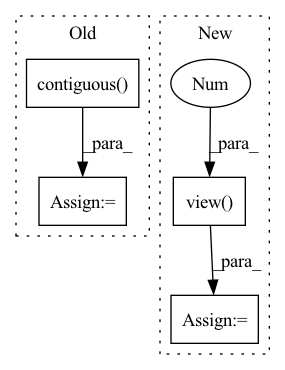

Pattern ID :2106

Before Change
indices_and_rois = torch.cat([roi_indices[:, None], rois], dim=1)
xy_indices_and_rois = indices_and_rois[:, [0, 1, 2, 3, 4]]
indices_and_rois = xy_indices_and_rois.contiguous()
// 利用建议框对公用特征层进行截取
pool = self.roi(x, indices_and_rois)
fc7 = self.classifier(pool)
After Change
roi_cls_locs = self.cls_loc(fc7)
roi_scores = self.score(fc7)
roi_cls_locs = roi_cls_locs.view(n, -1, roi_cls_locs.size(1))
roi_scores = roi_scores.view(n, -1, roi_scores.size(1))
return roi_cls_locs, roi_scores
In pattern: SUPERPATTERN
Frequency: 5
Non-data size: 4
Instances
Fragment ID: 7545251
Project Name: bubbliiiing/faster-rcnn-pytorch
Commit Name: d456f02a402fd8cf8db1d991aa612439b3c0ffb2
Time: 2021-01-30
Author: 47347516+bubbliiiing@users.noreply.github.com
File Name: nets/classifier.py
M Class Name: Resnet50RoIHead
N Class Name: Resnet50RoIHead
M Method Name: forward(5)
N Method Name: forward(4)
M Parent Class: nn.Module
N Parent Class: nn.Module
M File Name: nets/classifier.py
N File Name: nets/classifier.py
M Start Line: 68
M End Line: 77
N Start Line: 82
N End Line: 107
'>
Before Change
x = self.dense_block(input)
x = self.bottleneck_conv2d(x)
x = x.squeeze(dim=1)
x = x.permute(0, 2, 1).contiguous()
x, _ = self.rnn(x)
x = self.linear(x)
x = x.view(batch_size, W, out_channels, H)
output = x.permute(0, 2, 3, 1).contiguous()
After Change
x_rnn = x_rnn.permute(0, 2, 1).contiguous()
x_rnn, _ = self.rnn(x_rnn)
x_rnn = self.linear(x_rnn)
x_rnn = x_rnn.view(batch_size, W, 1, H)
x_rnn = x_rnn.permute(0, 2, 3, 1).contiguous()
output = torch.cat([x, x_rnn], dim=1)
'>
Fragment ID: 7545250
Project Name: tky823/dnn-based_source_separation
Commit Name: a03228ac5d881722942f5d3b8f51c12b05045f49
Time: 2021-10-18
Author: delta9guitar97@gmail.com
File Name: src/models/dense_rnn.py
M Class Name: RNNAfterDenseBlock
N Class Name: RNNAfterDenseBlock
M Method Name: forward(2)
N Method Name: forward(2)
M Parent Class: nn.Module
N Parent Class: nn.Module
M File Name: src/models/dense_rnn.py
N File Name: src/models/dense_rnn.py
M Start Line: 53
M End Line: 62
N Start Line: 57
N End Line: 66
'>
Before Change
indices_and_rois = torch.cat([roi_indices[:, None], rois], dim=1)
xy_indices_and_rois = indices_and_rois[:, [0, 1, 2, 3, 4]]
indices_and_rois = xy_indices_and_rois.contiguous()
// 利用建议框对公用特征层进行截取
pool = self.roi(x, indices_and_rois)
pool = pool.view(pool.size(0), -1)
After Change
roi_cls_locs = self.cls_loc(fc7)
roi_scores = self.score(fc7)
roi_cls_locs = roi_cls_locs.view(n, -1, roi_cls_locs.size(1))
roi_scores = roi_scores.view(n, -1, roi_scores.size(1))
return roi_cls_locs, roi_scores
'>
Fragment ID: 7545255
Project Name: bubbliiiing/faster-rcnn-pytorch
Commit Name: d456f02a402fd8cf8db1d991aa612439b3c0ffb2
Time: 2021-01-30
Author: 47347516+bubbliiiing@users.noreply.github.com
File Name: nets/classifier.py
M Class Name: VGG16RoIHead
N Class Name: VGG16RoIHead
M Method Name: forward(5)
N Method Name: forward(4)
M Parent Class: nn.Module
N Parent Class: nn.Module
M File Name: nets/classifier.py
N File Name: nets/classifier.py
M Start Line: 31
M End Line: 39
N Start Line: 33
N End Line: 59
'>
Before Change
// Back to batch first
attn_scores = torch.stack(attn_scores).transpose(0, 1)
mel_outputs = torch.stack(mel_outputs).transpose(0, 1).contiguous()
stop_tokens = torch.stack(stop_tokens).transpose(0, 1).squeeze(2)
// (B, T", mel_dim*r) -> (B, T, mel_dim)
mel_outputs = mel_outputs.reshape(B, -1, self.mel_dim)
return mel_outputs, stop_tokens, attn_scores
After Change
// Project to mel
// (B, mel_dim*r) -> (B, r, mel_dim)
output = self.mel_proj(proj_input)
output = output.view(B, -1, self.mel_dim)
// Stop token prediction
stop = self.stop_proj(proj_input)
stop = torch.sigmoid(stop)
'>
Fragment ID: 7545270
Project Name: thuhcsi/tacotron
Commit Name: fea9ec535ec373aad564646f4f292fbee0217c29
Time: 2021-03-18
Author: johnson.tsing@gmail.com
File Name: model/tacotron2.py
M Class Name: Decoder
N Class Name: Decoder
M Method Name: forward(4)
N Method Name: forward(4)
M Parent Class: nn.Module
N Parent Class: nn.Module
M File Name: model/tacotron2.py
N File Name: model/tacotron2.py
M Start Line: 127
M End Line: 224
N Start Line: 127
N End Line: 216
'>
Before Change
// Back to batch first
attn_scores = torch.stack(attn_scores).transpose(0, 1)
mel_outputs = torch.stack(mel_outputs).transpose(0, 1).contiguous()
stop_tokens = torch.stack(stop_tokens).transpose(0, 1).squeeze(2)
// (B, T", mel_dim*r) -> (B, T, mel_dim)
mel_outputs = mel_outputs.reshape(B, -1, self.mel_dim)
After Change
// Project to mel
// (B, mel_dim*r) -> (B, r, mel_dim)
output = self.mel_proj(proj_input)
output = output.view(B, -1, self.mel_dim)
// Stop token prediction
stop = self.stop_proj(proj_input)
stop = torch.sigmoid(stop)
'>
Fragment ID: 7545242
Project Name: thuhcsi/tacotron
Commit Name: fea9ec535ec373aad564646f4f292fbee0217c29
Time: 2021-03-18
Author: johnson.tsing@gmail.com
File Name: model/tacotron.py
M Class Name: Decoder
N Class Name: Decoder
M Method Name: forward(4)
N Method Name: forward(4)
M Parent Class: nn.Module
N Parent Class: nn.Module
M File Name: model/tacotron.py
N File Name: model/tacotron.py
M Start Line: 87
M End Line: 187
N Start Line: 88
N End Line: 180